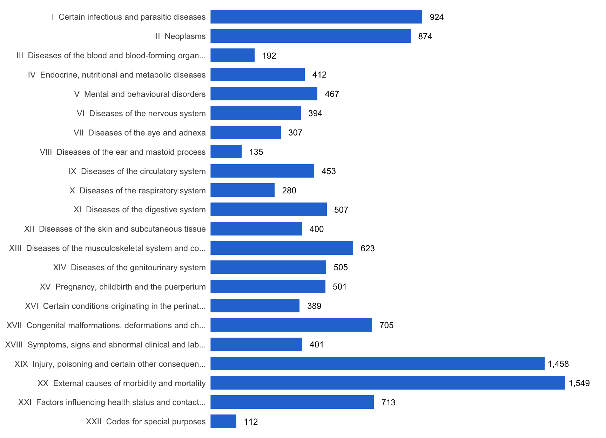

# install any missing packages, then load them all
pacman::p_load(
httr2, # build and send the API requests
tidyverse, # data wrangling: dplyr, tidyr, stringr, purrr, ggplot2
rio, # export the final dataset to Excel
DT # interactive table of the results
)From the WHO ICD-10 browser to a tidy, analysis-ready dataset
Introduction
If you work with health data, sooner or later you will meet the International Statistical Classification of Diseases and Related Health Problems, better known as ICD. It is the global standard, maintained by the World Health Organization (WHO), for recording diagnoses and causes of death.
The tenth revision, ICD-10, was endorsed by the World Health Assembly in May 1990 and has been in use in WHO member states since 1993 WHO adopted ICD-11 in 2019, and it came into effect in January 2022, but moving a whole health system to a new classification takes years. ICD-10 is still the version behind most hospital records, death registers, insurance claims and research databases around the world, and it will be for a while yet.
WHO publishes the 2019 edition of ICD-10 in an online browser at icd.who.int/browse10/2019/en. The browser is great for looking up a single code. It is much less helpful when you need all of them in a spreadsheet or a data frame, because there is no button to export the full list.
In this post, I show how I extracted the complete ICD-10 code list, with each code’s block and chapter, using R and the free WHO ICD API. The final script fetches 12,301 codes in under a minute.
Why you would want the full code list
Diagnosis codes rarely arrive with their meaning attached. A hospital extract might give you a column like primary_dx containing A09, J18.9 or O80, and nothing else. To do almost anything useful with it, you need a lookup table that tells you what each code means and where it sits in the classification. Some common uses:
- Defining study outcomes. Many studies define their outcomes from diagnosis codes, for example “any hospital admission for pneumonia” or “death from a cardiovascular cause”. That means listing every code that belongs to the outcome, often whole blocks or chapters.
- Grouping diagnoses. Thousands of individual codes are hard to analyse. The ICD hierarchy groups them into 22 chapters and a few hundred blocks, so you can summarise admissions or deaths by body system or disease group.
- Comorbidity scores. Widely used indices such as Charlson and Elixhauser are defined as lists of ICD-10 codes.
- Labelling and checking data. Joining a lookup table to your data turns
B54into “Unspecified malaria” in tables and figures. It also flags invalid or mistyped codes, because they won’t match. - Mapping to other systems. Translating codes between classifications, or from free-text diagnoses to codes, needs a complete reference list to map against.
The problem with copy and paste
The obvious approach is to open the browser and copy the codes into Excel. That was my first attempt too: I copied the block headings, chapter by chapter, into a spreadsheet. It works for a handful of codes, but for the full list it has real problems:
- It is slow. ICD-10 has 22 chapters, 263 blocks and more than 12,000 codes once you include the subcategories (the codes with a decimal point, such as
A00.1). Expanding and copying every branch of the tree by hand takes days. - It is error-prone. It is very easy to skip a block, paste a row twice or truncate a long title. When I later compared my hand-made list with the API version, whole chapters were missing: pregnancy (O codes), perinatal conditions (P), congenital malformations (Q), health status (Z) and special purposes (U).
- It is hard to repeat. WHO updates the classification, and nobody wants to redo days of copying. A script can be rerun in a minute.
- It leaves no record. A spreadsheet doesn’t show where the data came from or how it was put together. A script documents exactly how the dataset was built, which matters for reproducible research.
A programmatic extract fixes all four. The same code gives the same complete dataset every time, for anyone who runs it, anywhere in the world.
The WHO ICD API
Behind the browser, WHO provides the ICD API, a free web service that returns the classification as JSON. It covers both ICD-11 and ICD-10. For ICD-10, every chapter, block and code has its own address:
https://id.who.int/icd/release/10/2019 the 2019 release
https://id.who.int/icd/release/10/2019/I chapter I
https://id.who.int/icd/release/10/2019/A00-A09 a block
https://id.who.int/icd/release/10/2019/A00 a three-character code
https://id.who.int/icd/release/10/2019/A00.0 a subcategoryEach response contains the entity’s title and, most usefully, a list of its children. Ask for the 2019 release and you get the 22 chapters. Ask for a chapter and you get its blocks. Ask for a block and you get its codes, and so on. This means we don’t have to guess which codes exist: we start at the top and follow the tree down.
Getting API access
To use the API:
- Register for a free account at icd.who.int/icdapi.
- Open View API access key(s) to get your Client ID and Client Secret.
- Save them in your
~/.Renvironfile, so they never appear in your scripts, and restart R:
icd_client_id=your-client-id
icd_client_secret=your-client-secretThe API uses OAuth2 client credentials. You exchange the ID and secret for an access token, which is valid for one hour. You could paste a token into your script, but it will expire, and a long run will start failing partway through. It’s better to let R request and renew the token for you, as shown below.
Extracting the codes in R
Every code block in this section runs as written. Copy them into a script, or download this post’s index.qmd and render it, and you will get the same dataset, table and chart you see below. The only thing you need is your own API credentials in ~/.Renviron, as described above.
Note
The outputs on this page were produced by running the code when the post was rendered. Your numbers will match as long as WHO has not changed the 2019 release.
The code uses {httr2} for the API requests, {tidyverse} for data wrangling, {rio} to export the result and {DT} for the interactive table.
1. Authentication that renews itself
{httr2} has built-in OAuth support. We describe the WHO token endpoint once, and every request then gets a valid token automatically. It is fetched on first use, cached, and renewed when it expires.
# read the API credentials saved in ~/.Renviron (never type them in the code)
icd_client_id <- Sys.getenv("icd_client_id")
icd_client_secret <- Sys.getenv("icd_client_secret")
# stop early with a clear message if the credentials are missing
if (!nzchar(icd_client_id) || !nzchar(icd_client_secret)) {
stop("Set icd_client_id and icd_client_secret in ~/.Renviron, then restart R")
}
# describe the WHO token endpoint; httr2 fetches, caches and renews the token
icd_client <- oauth_client(
id = icd_client_id,
secret = icd_client_secret,
token_url = "https://icdaccessmanagement.who.int/connect/token",
name = "who_icd_api"
)
# the ICD-10 release to extract, and the address at the top of its tree
icd_release <- "2019"
icd_root <- str_glue("https://id.who.int/icd/release/10/{icd_release}")
# number of requests sent to the API at the same time
n_parallel <- 102. One function to build every request
Every request needs the same headers, authentication and error handling, so we wrap them in a small function. Two details matter a lot for a run of more than 12,000 requests:
- Retries. Servers sometimes answer “too many requests” (HTTP 429) or have a temporary hiccup (5xx errors).
req_retry()waits and tries again instead of giving up.retry_on_failure = TRUEalso retries when the connection drops altogether. - HTTP/1.1. With many parallel requests, I saw the server reset connections with the error
Error in the HTTP2 framing layer. Using the older HTTP/1.1 protocol made those errors go away.
# the API returns http:// links, request them over https
to_https <- \(x) str_replace(x, "^http://", "https://")
# build (but don't send) the request for one API address
icd_request <- function(url) {
request(url) |>
# ask for JSON, API version 2 and English titles
req_headers(
accept = "application/json",
`API-Version` = "v2",
`Accept-Language` = "en"
) |>
# retry rate limits, server errors and dropped connections, waiting longer each time
req_retry(
max_tries = 5,
retry_on_failure = TRUE,
is_transient = \(resp) resp_status(resp) %in% c(429, 500, 502, 503, 504)
) |>
# use HTTP/1.1 (curl's code 2) to avoid HTTP/2 resets under parallel load
req_options(http_version = 2) |>
# give up on a single attempt after 60 seconds (it is then retried)
req_timeout(60) |>
# log in with OAuth; the token is fetched and renewed automatically
req_oauth_client_credentials(icd_client, scope = "icdapi_access")
}3. Fetching many entities in parallel
Sending requests one at a time is the main reason scripts like this are slow. req_perform_parallel() keeps several requests in flight at once. With on_error = "continue", one failure doesn’t stop the batch; we get the error back and decide what to do with it.
That decision is important. My first version caught every error and treated it as “this code doesn’t exist”. When the token expired, every request after that failed, and the codes silently disappeared from the output. Here, failures are kept in their own table, and an authentication error (HTTP 401) stops the run straight away with a clear message.
# request many addresses in parallel; return the results and failures separately
fetch_entities <- function(urls) {
# send up to n_parallel requests at once; keep going if some fail.
# The progress bar only shows when running interactively, not when rendering
resps <- map(urls, icd_request) |>
req_perform_parallel(on_error = "continue", max_active = n_parallel,
progress = interactive())
# TRUE for requests that got a response, FALSE for those that failed
ok <- map_lgl(resps, \(r) inherits(r, "httr2_response"))
# one row per failed request: its address, HTTP status (if any) and error message
failed <- tibble(
url = urls[!ok],
status = map_int(resps[!ok], \(e) if (inherits(e, "httr2_http"))
resp_status(e$resp) else NA_integer_),
message = map_chr(resps[!ok], conditionMessage)
)
# an expired or invalid token makes every remaining request fail, so stop here
if (any(failed$status %in% 401)) {
stop("ICD API returned 401 (unauthorised): token expired or credentials invalid")
}
# turn each successful response into a one-row table, then stack them
parsed <- map(resps[ok], \(r) {
json <- resp_body_json(r)
tibble(
api_url = to_https(json$`@id`), # entity address
code_label = json$title$`@value` %||% NA_character_, # English title
child_urls = list(to_https(as.character(unlist(json$child)))) # its children
)
}) |>
bind_rows()
list(ok = ok, parsed = parsed, failed = failed)
}4. Walking down the tree
Now we start at the 2019 release and work down one level at a time. Each level’s children become the next level’s requests, until we reach codes that have no children.
As we go, each entity passes its chapter and block down to its children. Once we reach a code, we already know which block and chapter it belongs to, so we don’t need a separate lookup table. Some chapters have nested blocks (for example, C00-C97 contains C00-C75, which contains C00-C14), and each code is assigned to its most specific block.
start_time <- Sys.time()
# request the top of the tree; its children are the 22 chapters
root_resp <- icd_request(icd_root) |> req_perform()
chapter_urls <- to_https(as.character(unlist(resp_body_json(root_resp)$child)))
# the queue holds the entities still to request, with what they inherit from above
queue <- tibble(
url = chapter_urls,
parent_url = as.character(icd_root),
chapter = NA_character_,
chapter_topic = NA_character_,
category_code = NA_character_,
category_topic = NA_character_
)
# collect each level's results and failures in lists, combine once at the end
levels_list <- list()
failed_list <- list()
depth <- 1
# keep going until a level has no children left to request
while (nrow(queue) > 0) {
message(str_glue("Level {depth}: requesting {nrow(queue)} entities"))
res <- fetch_entities(queue$url)
failed_list[[depth]] <- res$failed
# put the inherited columns next to the new results (same row order)
level_df <- bind_cols(select(queue[res$ok, ], -url), res$parsed) |>
mutate(
level = depth,
icd_code = str_extract(api_url, "[^/]+$"), # text after the last /
is_block = str_detect(icd_code, "-"), # blocks look like A00-A09
chapter = if (depth == 1) icd_code else chapter, # level 1 rows are chapters
chapter_topic = if (depth == 1) code_label else chapter_topic,
category_code = if_else(is_block, icd_code, category_code), # nearest block
category_topic = if_else(is_block, code_label, category_topic)
)
levels_list[[depth]] <- level_df
# the children of this level become the next queue, one row per child
queue <- level_df |>
select(parent_url = api_url, url = child_urls,
chapter, chapter_topic, category_code, category_topic) |>
unnest(url)
depth <- depth + 1
}Level 1: requesting 22 entitiesLevel 2: requesting 211 entitiesLevel 3: requesting 1660 entitiesLevel 4: requesting 8254 entitiesLevel 5: requesting 1340 entitiesLevel 6: requesting 1110 entities# combine all levels, and all failures
icd10_entities <- bind_rows(levels_list)
icd10_failed <- bind_rows(failed_list)
# report failures loudly instead of dropping them silently
if (nrow(icd10_failed) > 0) {
warning(str_glue("{nrow(icd10_failed)} requests failed after retries"))
}
elapsed <- difftime(Sys.time(), start_time, units = "secs")The messages above show the progress through the tree. This run took 59 seconds, with 0 failed requests.
5. The final dataset
Finally, we drop the chapter and block rows, keep the codes, and add a link to each code’s page in the WHO browser. That link is handy when someone wants to read the full inclusion and exclusion notes for a code.
icd10_codes <- icd10_entities |>
# keep the codes: drop chapters (level 1) and blocks
filter(level > 1, !is_block) |>
# choose and order the final columns
transmute(
icd_code,
code_label,
icd_code_api_url = api_url,
icd_code_direct_url = str_glue("https://icd.who.int/browse10/{icd_release}/en#/{icd_code}"),
category_code,
category_topic,
chapter,
chapter_topic
) |>
# sort in code order: A00, A00.0, A00.1, ..., A01
arrange(icd_code)
# export the codes, plus any failed requests so nothing goes missing unnoticed.
# The file is saved in the working directory
list(icd10_codes = icd10_codes, failed_requests = icd10_failed) |>
export("datasets/2019_icd10_codes.xlsx")The result is one tidy row per code. The full dataset is saved to Excel; to keep this page light, the table below shows only two chapters, both major causes of death and illness worldwide: chapter I, infectious and parasitic diseases such as malaria, tuberculosis and diarrhoeal disease, and chapter II, neoplasms (cancers). Search the table, or filter any column. Each code links to its page in the WHO browser.
# chapters covering many of the most common diseases worldwide
common_chapters <- c("I", "II")
icd10_codes |>
# show only those chapters, to keep the page light
filter(chapter %in% common_chapters) |>
# turn each code into a link to its page in the WHO ICD-10 browser
mutate(icd_code = str_glue('<a href="{icd_code_direct_url}" target="_blank">{icd_code}</a>')) |>
select(icd_code, code_label, category_code, category_topic, chapter, chapter_topic) |>
datatable(
rownames = FALSE,
class = "compact stripe hover",
colnames = c("Code", "Title", "Block", "Block title", "Chapter", "Chapter title"),
filter = "top", # a filter box above each column
escape = -1, # escape all but column 1, so the code links stay clickable
options = list(pageLength = 10, scrollX = TRUE)
)In total, the dataset has 12,301 codes: 2,090 three-character codes plus their subcategories, across 22 chapters and 263 blocks.
# chapters in their natural order (I to XXII), not alphabetical
chapter_order <- as.character(as.roman(1:22))
icd10_codes |>
count(chapter, chapter_topic) |>
mutate(
chapter = factor(chapter, levels = chapter_order),
label = str_c(chapter, " ", str_trunc(chapter_topic, 48))
) |>
arrange(chapter) |>
# chapter I at the top of the chart
mutate(label = fct_rev(fct_inorder(label))) |>
ggplot(aes(n, label)) +
geom_col(fill = "#2a78d6", width = 0.7) +
geom_text(aes(label = format(n, big.mark = ",")), hjust = -0.15, size = 3.2) +
scale_x_continuous(expand = expansion(mult = c(0, 0.1))) +
labs(x = NULL, y = NULL) +
theme_minimal(base_size = 11) +
theme(panel.grid = element_blank(), axis.text.x = element_blank())
Using the dataset
With the lookup table in hand, labelling and grouping diagnosis data takes a single join. To show how, here is a small made-up admissions dataset, with the kind of messy codes you see in real data:
# made-up admissions: note the lower case, the trailing space and the invalid K99
admissions <- tibble(
patient_id = 1:8,
primary_dx = c("A09", "j18.9", "B54", "J18.9 ", "E43", "A09", "K99", "I21.9")
)
# tidy the codes, then join the lookup table to label them
admissions_labelled <- admissions |>
mutate(icd_code = str_trim(toupper(primary_dx))) |>
left_join(icd10_codes, by = "icd_code")
# count admissions by chapter
admissions_labelled |>
count(chapter, chapter_topic, sort = TRUE)# A tibble: 5 × 3
chapter chapter_topic n
<chr> <chr> <int>
1 I Certain infectious and parasitic diseases 3
2 X Diseases of the respiratory system 2
3 IV Endocrine, nutritional and metabolic diseases 1
4 IX Diseases of the circulatory system 1
5 <NA> <NA> 1Any code that finds no match after the join is a good candidate for a data query:
# codes that are not in the WHO ICD-10 list
admissions_labelled |>
filter(is.na(code_label)) |>
select(patient_id, primary_dx)# A tibble: 1 × 2
patient_id primary_dx
<int> <chr>
1 7 K99 Defining an outcome from whole blocks becomes a filter rather than a hand-typed list of codes:
# all codes in the "Influenza and pneumonia" block, J09-J18
pneumonia_codes <- icd10_codes |>
filter(category_code == "J09-J18") |>
pull(icd_code)
length(pneumonia_codes)[1] 44head(pneumonia_codes, 15) [1] "J09" "J10" "J10.0" "J10.1" "J10.8" "J11" "J11.0" "J11.1" "J11.8"
[10] "J12" "J12.0" "J12.1" "J12.2" "J12.3" "J12.8"Speed and lessons learned
My first version of this script took about 30 minutes and, as it turned out, quietly missed thousands of codes. The final version takes under a minute and reports every failure. The main changes were:
- Follow the tree instead of guessing. The first version built candidate codes (
A00.0toA00.9for every three-character code) and asked the API whether each one existed. Most of them don’t, so most requests were wasted. Following the API’s own child links requests only codes that exist, and it also finds codes with a fifth character, such asB18.00, that guessing would miss. - Run requests in parallel. Ten requests in flight at once, instead of one, cut the waiting time dramatically.
- Never treat every error as “not found”. A missing code, an expired token and a dropped connection are different problems. Retry what is temporary, stop on authentication errors, and record the rest.
- Let the library manage the token. OAuth client credentials with
{httr2}remove the one-hour token expiry problem entirely. - Check the result against what you expect. Comparing the new output with my old hand-built list is how I found both the missing chapters and the duplicated rows in the old version.
A few caveats
- This is the WHO version of ICD-10. Several countries use their own national modifications, such as ICD-10-CM in the United States, ICD-10-AM in Australia and ICD-10-GM in Germany. These add many codes that the WHO version doesn’t have. If your data use a national modification, get the code list from the organisation that maintains it.
- Titles are not the whole story. Many codes come with inclusion and exclusion notes that matter for correct coding. The
icd_code_direct_urlcolumn links to each code’s page in the browser so you can read them. - The same approach works for ICD-11. The API has the same tree structure for ICD-11, so the traversal can be adapted when you move to the new revision.
Conclusion
Copying ICD-10 codes by hand from a website is slow, error-prone and impossible to reproduce. With the free WHO ICD API and fewer than 200 lines of R, you can build a complete, well-structured ICD-10 lookup table in under a minute, and rebuild it whenever you need to.
For researchers working with routine health data anywhere in the world, that table is a foundation for defining outcomes, grouping diagnoses, computing comorbidity scores and checking data quality. I hope this saves you the days of copy and paste it would otherwise take.